Python
Primeros Pasos
URL Presentación
https://bitson.group/slides/python1Archivos de Ejemplo
https://bitson.group/slides/archivos/archivos.tgz¿Python?
Creado por Guido van Rossum a principios de los '90.
- Interpretado (Scripting).
- Tipado dinámico.
- Fuertemente tipado.
- Multiplataforma.
- Multiparadigma.
Características
- Sintáxis simple, clara y sencilla.
- Fácil de aprender.
- Dinámico.
- Gestión automática de memoria.
- Gran cantidad de librerías.
No recomendable
- Bajo nivel.
- Rendimiento crítico
Python Zen

Python Zen
- Bello es mejor que feo.
- Explícito es mejor que implícito.
- Simple es mejor que complejo.
- Complejo es mejor que complicado.
- Plano es mejor que anidado.
- Disperso es mejor que denso.
- La legibilidad cuenta.
- Los casos especiales no son tan especiales como para quebrantar las reglas.
- Aunque lo práctico gana a la pureza.
- Los errores nunca deberían dejarse pasar silenciosamente.
- A menos que hayan sido silenciados explícitamente.
- Frente a la ambigüedad, rechaza la tentación de adivinar.
- Debería haber una -y preferiblemente sólo una- manera obvia de hacerlo.
- Aunque esa manera puede no ser obvia al principio a menos que usted sea holandés.
- Ahora es mejor que nunca.
- Aunque nunca es a menudo mejor que ya mismo.
- Si la implementación es difícil de explicar, es una mala idea.
- Si la implementación es fácil de explicar, puede que sea una buena idea.
- Los espacios de nombres (namespaces) son una gran idea ¡Hagamos más de esas cosas!
Instalación
Implementaciones:
- CPython
- Jython
- IronPython
- PyPy
Herramientas
A través del intérprete o ejecutando scripts.
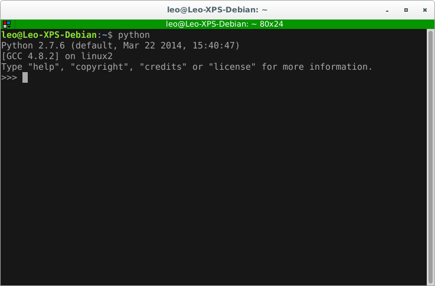IDEs
http://en.wikipedia.org/wiki/List_of_Python_software- Eclipse con PyDev: http://pydev.org/
- NetBeans: Python Plugin
- NINJA IDE: http://ninja-ide.org/
- SPE: Stani's Python Editor
- The Eric Python IDE
- BOA Constructor
- Kdevelop
- PyCharm: http://www.jetbrains.com/pycharm/
- Komodo: http://komodoide.com/
- Wing IDE: http://www.wingware.com/
Intérpretes Mejorados
- IPython: http://ipython.org/
- IDLE: https://docs.python.org/2/library/idle.html
Editores Texto
- vim: https://github.com/fisadev/fisa-vim-config
- emacs: Python Programming
- Geany: http://www.geany.org/
Instalar PIP
Es un instalador de paquetes de Python.
# apt-get install python-pip
# yum install python-pip
Links de Interés
- Sitio Oficial: https://www.python.org/
- Comunidad Python Argentina: http://python.org.ar/
Libros y Documentación
- Python Para Todos: http://mundogeek.net/tutorial-python/
- Aprenda a pensar como un programador con Python: Descarga de OpenLibra
- Tutorial Python PyAr: http://docs.python.org.ar/tutorial/index.html
- The Python Tutorial: https://docs.python.org/2/tutorial/
- Dive into Python: http://es.diveintopython.net/toc.html
- Think Python http://www.greenteapress.com/thinkpython/
entonces...
Manos a la obra

El Famoso...
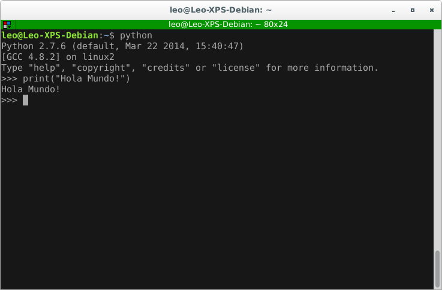y ahora como Script
Creamos un archivohola.py
#!/usr/bin/python
print("Hola Mundo!")
ASCII y Unicode
En Python 2.x los códigos fuente están en ASCII.
Mientras que en Python 3.x están en UTF-8.
En el siguiente artículo se discute el soporte de Unicode en Python 2.x: https://docs.python.org/2/howto/unicode.html
El PEP 0263 (Python Enhancement Proposals) especifica cómo definir el "encoding".
#!/usr/bin/python
# -*- coding: utf-8 -*-
Entendiendo Unicode - Facundo Batista - PyConAr 2012
Sintáxis Básica
Python tiene 31 palabras reservadas: keywords.py
and as assert break class continue def del
elif else except exec finally for from global
if import in is lambda not or pass
print raise return try while with yield
Comentarios inline se indican comenzando con #.
La separación de bloques se realiza por medio de identación (por lo general, 4 espacios).
También viene con 80 funciones incorporadas: Built-in Functions
Tipos de Datos Básicos
Se puede ver un ejemplo en datos_basicos.py
- Númericos:
- Enteros.
- De Coma Flotante.
- Complejos.
- Cadenas de Texto:
- Strings.
- Unicode.
- Raw.
- Lógicos
Conversión de Números
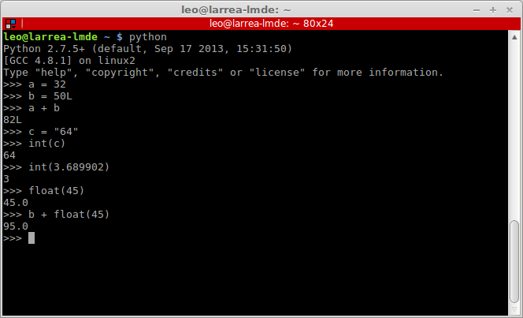Números Reales
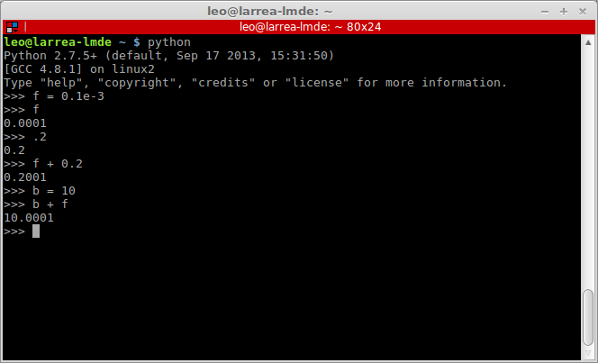Números Complejos
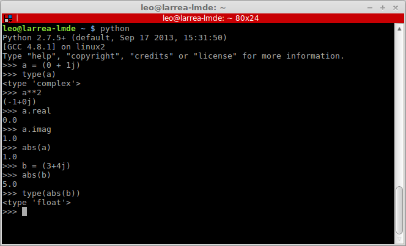Codificación
encode("codificación"): codifica un Unicode.decode("codificación"): codifica un String.
Métodos de cadenas
strip("caracter"): "limpia" espacios al principio o al final.split("caracter"): divide la cadena.find("substring", "i", "f"): busca en la cadena.startswith("prefijo", "i", "f"): busca si comienza con.endswidth("sufijo", "i", "f"): busca si termina con.find("substring", "i", "f"): busca en la cadena.lower(): convierte en minúsculas.upper(): convierte en mayúsculas.isdigit(): ¿es numérica?.isalpha(): ¿es alfanumérica?.islower(): ¿está en minúsculas?.isupper(): ¿está en mayúsculas?.
Ingreso de datos
- Texto:
raw_input("Mensaje para el usuario"). - Valor:
input("Mensaje para el usuario").
Formateo de datos
- método
.format("formato"). - operador
%(no recomendado).
Más info: Format String Syntax
Operadores Aritméticos
Se puede ver un ejemplo en op_aritmeticos.py
- Suma:
+ - Resta:
- - Multiplicación:
* - División:
/ - Módulo:
% - División Entera:
// - Potenciación:
**
Operadores Lógicos
Se puede ver un ejemplo en op_logicos.py
- Suma:
or - Producto:
and - Negación:
not
Operadores Relacionales
Se puede ver un ejemplo en op_relacionales.py
- Igualdad:
== - No igualdad:
!= - Mayor:
> - Menor:
< - Mayor o igual:
>= - Menor o igual:
<=
Operadores bit
Se puede ver un ejemplo en op_bit.py
- and:
& - or:
| - xor:
^ - not:
~ - desplazamiento a izquierda:
<< N - desplazamiento a derecha:
>> N
Colecciones
Se puede ver un ejemplo en colecciones.py
- Listas.
- Tuplas.
- Diccionarios.
Listas
- Colección ordenada y modificable.
- Pueden contener cualquier tipo de dato.
- Se utilizan corchetes [ ].
- Accesible como
lista[posición] - Slicing:
lista[inicio:fin:salto]
Probando Listas
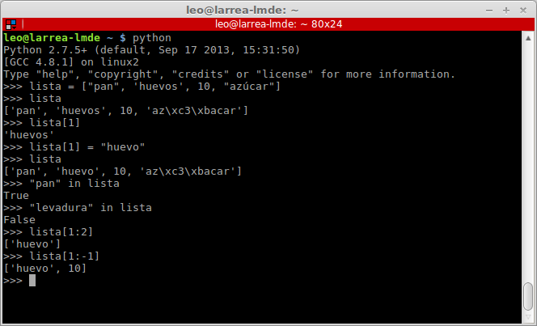Métodos en Listas
sort(): ordena la lista.reverse(): invierte el orden.pop(posición): extrae un elemento.append(item): agrega un elemento.insert(posición, item): inserta un elemento.remove(item): elimina la primer ocurrencia de item.count(item): cuenta las ocurrencias de item.index(item): devuelve la posición de item.extend(lista): extiende la lista con lista.
Tuplas
- Colección ordenada e Inmutable.
- Pueden contener cualquier tipo de dato.
- Se utilizan paréntesis ( ).
- Accesible como
tupla[posición] - Slicing:
tupla[inicio:fin:salto] - Más ligeras que las listas.
- No tienen métodos.
Probando Tuplas
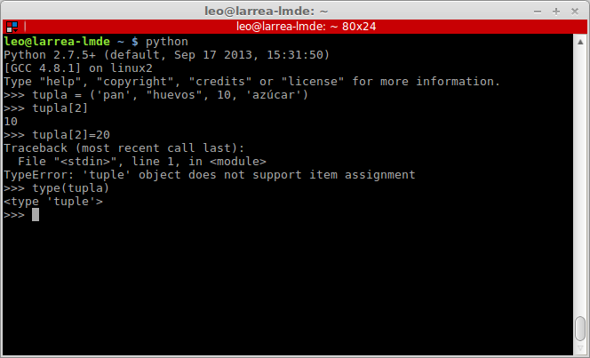Diccionario
- Colección NO ordenada.
- Modificable.
- Conjunto clave - valor.
- clave: cualquier tipo de dato inmutable.
- valor: cualquier tipo de dato.
- Se utilizan llaves { }.
- Accesible como
diccionario[clave] - No hay Slicing.
Probando Diccionarios
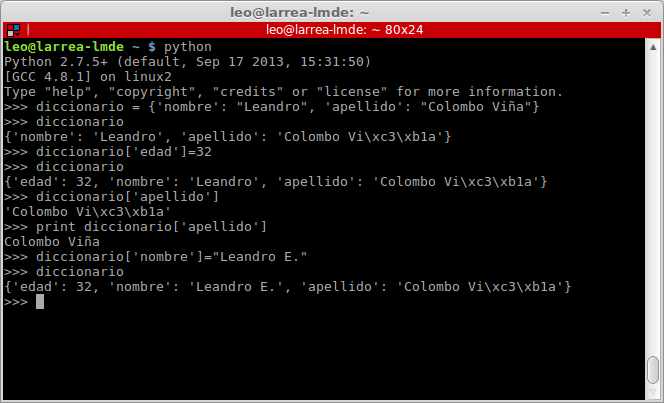Métodos en Diccionarios
keys(): devuelve una lista de las claves.values(): devuelve una lista de los valores.items(): devuelve una lista de tuplas (clave, valor).get(clave, valor x defecto): devuelve el valor para clave o el valor por defecto si no existe.pop(clave, valor x defecto): remueve el valor para clave o el valor por defecto si no existe.setdefault(clave, valor x defecto): setea la clave y el valor por defecto.clear(): elimina el contenido del diccionario.update(dict): actualiza el contenido del diccionario con los valores deL diccionario dict.
Extras
- Con
inpodemos verificar la pertenencia de un elemento: - Listas y Tuplas.
- Claves de un Diccionario.
- Con
delpodemos borrar: - Listas y Tuplas con posición o slicing.
- Claves de un Diccionario.
- Con
lennos devuelve la cantidad de elementos: - Listas y Tuplas.
- Tuplas (claves, valor) de un Diccionario.
Control de Flujo
Se puede ver un ejemplo en control_flujo.py
- Condicionales:
ifif ... elseif ... elif ... elif ... else- Ciclos:
whilefor ... incontinuebreak
If...elif...else
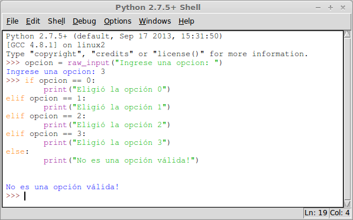¿Por qué me dice que no es una opción válida?
While
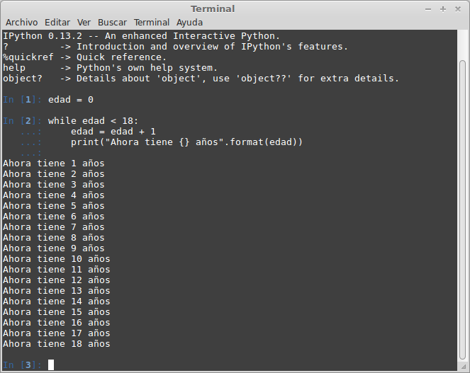For ... in
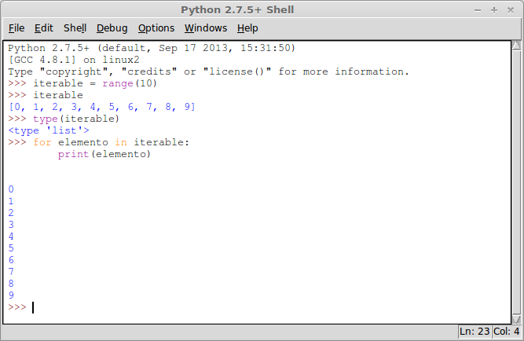Funciones
Se puede ver un ejemplo en funciones.py
- Son fragmentos reutilizables de código (con o sin nombre).
- Pueden recibir argumentos.
- Devuelven un valor.
def nombre_funcion(par1, par2, ...):
""" Esta función hace ...
...
"""
instruccion1
instruccion2
...
instruccionN
Definiendo funciones
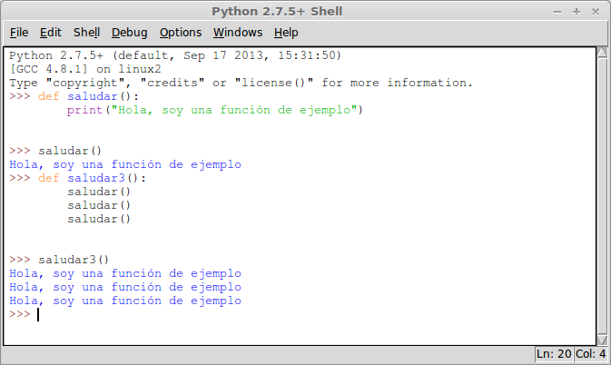Argumentos
- Argumentos con identificadores.
- Argumentos con identificadores y valor por defecto.
- Tupla de Argumentos por posición (
*). - Diccionario de Argumentos (
**).
def nombre_funcion(par1, par2=100):
""" docstring
...
"""
instruccion1
instruccion2
...
instruccionN
def otra_funcion(par1, par2, *args, **kwargs):
""" docstring
...
"""
instruccion1
instruccion2
...
instruccionN
Usando argumentos
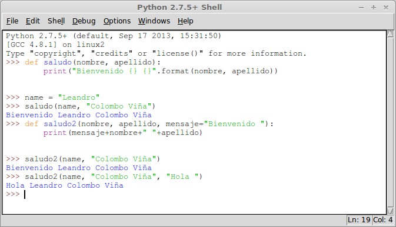Argumentos Variables
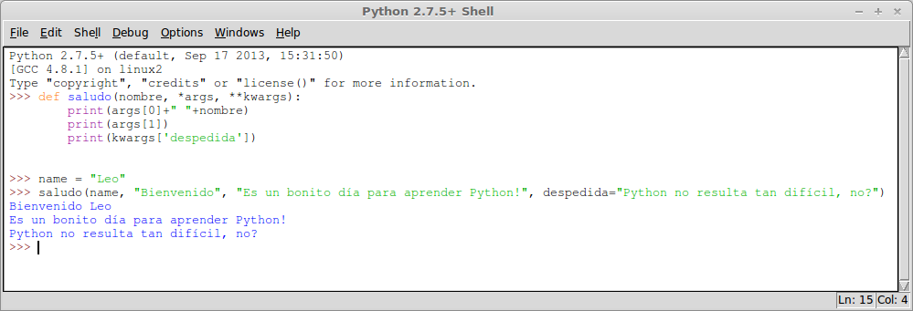¿Valor o referencia?
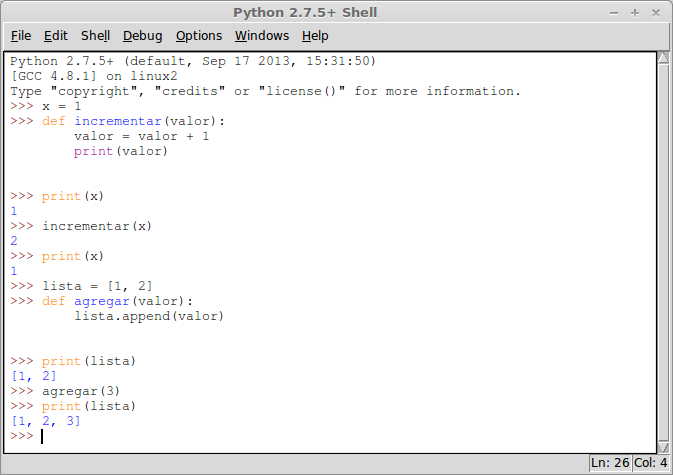Módulos
Se puede ver un ejemplo en modulos.py
- Archivos individuales con código.
- Se accede a ellos a través de
import.
#!/bin/bash/python
# coding: utf-8
import funciones
## Ahora podemos utilizar las funciones que hicimos antes.
## Notemos que cuando realizamos el import, se ejecuta todo
## el código anterior!
funciones.imprimir_mensaje()
Importando selectivamente
Ejemplo de mensajes.py
#!/usr/bin/python
# coding: utf-8
def mensaje1():
print("Imprimiendo primer mensaje")
def mensaje2():
print("Imprimiendo el segundo mensaje")
print("Esto se ejecuta siempre")
if __name__ == "__main__":
print("Esto se imprime si no es una importación")
Importando selectivamente
Usándolo en modulos2.py
#!/bin/bash/python
# coding: utf-8
import mensajes
## Si queremos omitir el tener que escribir el nombre del
## módulo cuando tenemos que llamar a la función podemos
## utilizar las cláusulas from ... import ...
from mensajes import mensaje1
mensaje1()
print("Esto no es de mensaje, es de módulos2")
Ejercicios
https://bitson.group/slides/archivos/ejercicios.pdfURL Presentación
https://bitson.group/slides/python1Archivos de Ejemplo
https://bitson.group/slides/archivos.tgzGRACIAS
Leandro E. Colombo Viña
bitson.groupTwitter: @lecovi
Correo electrónico / G+: leo@bitson.group

Este trabajo está licenciado bajo Creative Commons Attribution-NonCommercial-ShareAlike 4.0 International License.